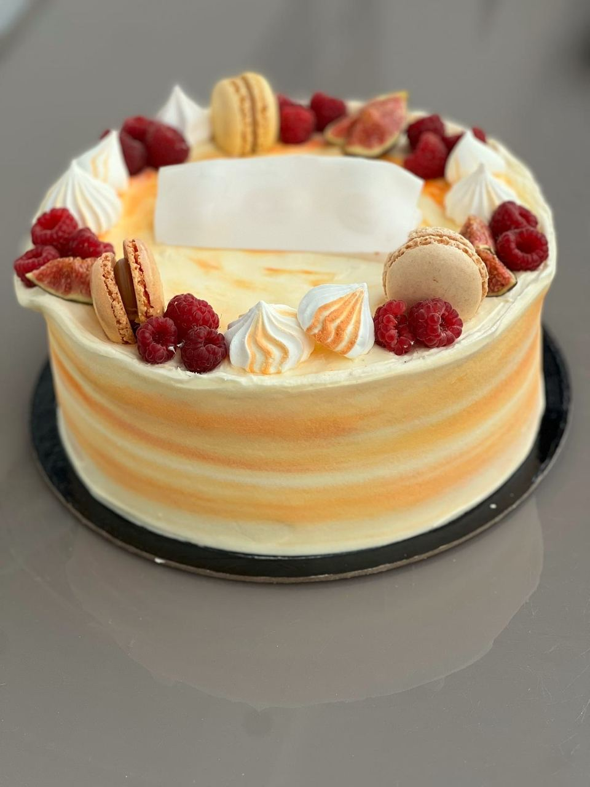
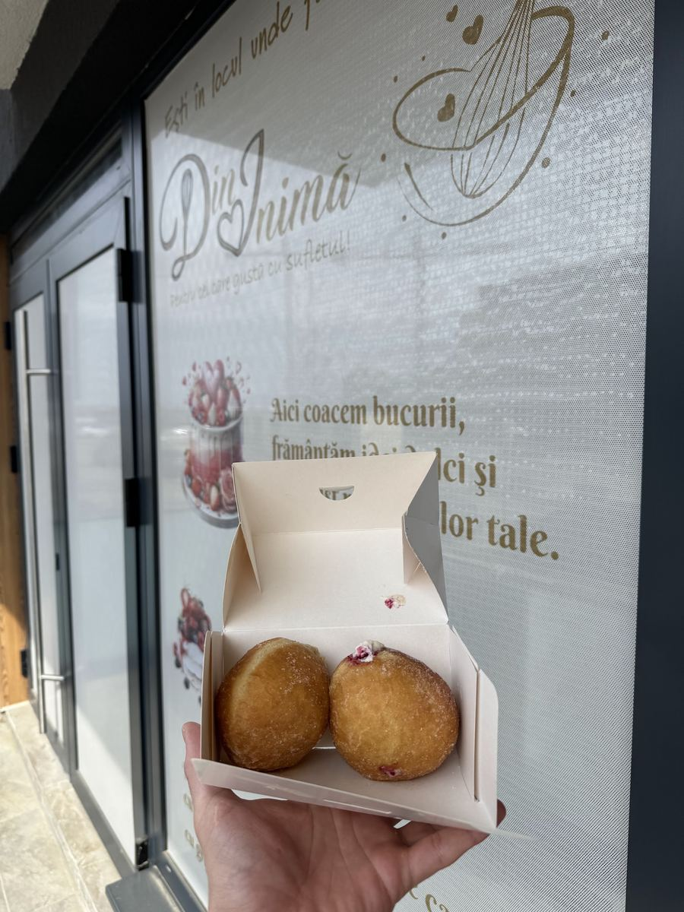

Torturi făcute din inimă, în Brașov.
Cofetărie artizanală cu laborator, la comandă: torturi, candy bar, prăjituri și rulouri. Spune-ne ce sărbătorești și ce vrei scris pe plăcuță. Comanda ajunge pe WhatsApp gata completată.

5,0 pe Google, din 148 de recenzii
Ce iese din laborator
Torturi, candy bar și prăjituri făcute la comandă. Alege o categorie.
-
Tort cu frișcă și fructe de pădure
-
Inimioare roșii și mesajul „We love you”
-
Mesajul scris direct în glazură
-
Tort verde cu rachetă de tenis
-
Tort galben cu fețe desenate și bezele
-
Tort-cifră cu cremă și fructe de pădure
-
Tort mic cu inimă și mesajul „Love”
-
Inimă cu glazură oglindă și logo comestibil
-
Masă de candy bar
-
Platouri cu fructe și deserturi în pahar
-
Deserturi mici și fructe, pe aceeași masă
-
Etajere cu deserturi mici
-
Cutie cu mini-prăjituri
-
Para, desert glazurat
-
Portocala, tăiată pe jumătate
-
Mărul, tăiat pe jumătate
-
Piersica
-
Cireșele
-
Prăjitură cu ciocolată și ecler cu cremă
-
Prăjitură cu ciocolată și inimă roșie
-
Ruladă cu cremă verde și zmeură
-
Cutie cu eclere
-
Felie cu blaturi de ciocolată
-
Cinnamon roll în cutie
-
Cutii cu cinnamon rolls
-
Gogoși proaspete
-
Desert cu cremă de ciocolată
Comanda, în trei pași
Scrii ce îți dorești
Completezi formularul de sus: ocazia, data, câte persoane, gustul sau ideea și ce vrei scris pe plăcuță. WhatsApp se deschide cu tot textul deja scris.
Stabiliți detaliile
Vorbiți pe WhatsApp sau la telefon. Una dintre clientele noastre scrie:
am stabilit totul telefonic, fără a fi nevoie sa merg la laborator
.Îți ridici tortul
De la laborator, pe Str. Ioan Popasu 53 (V17), Brașov. Marți–Vineri 10:00–18:00, Sâmbătă 10:00–14:00.

Ce spun clienții
5,0 pe Google, din 148 de recenzii. Citatele sunt copiate exact, cu primul nume al autorului.
Se simte atenția la fiecare detaliu și pasiunea cu care este făcut.
Am avut o experiență excelentă cu Din Inimă cofetarie Brașov! Am comandat tortul și prăjiturile pentru botezul copilului nostru, iar totul a fost peste așteptări.
Sanzi · Google MapsRecomand din tot sufletul Tortul Inima. Un desert perfect pentru copii, dar si pentru cei mai pretențioși adulti. A fost foarte frumos, foarte gustos, aromat, deloc dulce, bucățile acelea de portocala din interiorul tortului.
Ioana · Google MapsTotul a fost la superlativ! Personal foarte amabil, am stabilit totul telefonic, fără a fi nevoie sa merg la laborator, iar tortul a fost cu adevărat gustos! Mulțumim!
Andreia · Google MapsDupă 30 min de când l-am luat, jumătate din tort l-am mâncat deja în 2 persoane Mulțumim!! Este foarte frumos dar și foarte gustos. Exact cum îi place!! A zis ca are gustul copilăriei
Bombonic · Google MapsAm comandat un tort minunat, proaspat, pregatit cu grija si pasiune. Are un gust usor, de vara (cu zmeura si vanilie din crema de mascarpone), frisca si fructe de padure pe deasupra.
Adriana · Google MapsAm incercat azi cinnamon rolls cu ciocolată si pot spune ca am ramas foarte plăcut surprinsa, este extraordinar de bun, crema este geniala!!! Recomand din tot sufletul!
Andreea · Google Maps
Program și adresă
- Luniînchis
- Marți10:00–18:00
- Miercuri10:00–18:00
- Joi10:00–18:00
- Vineri10:00–18:00
- Sâmbătă10:00–14:00
- Duminicăînchis
Program de la Google Maps
Str. Ioan Popasu 53 (V17)500170 Brașov
0764 663 434
Harta se încarcă doar dacă o ceri, ca pagina să rămână rapidă.